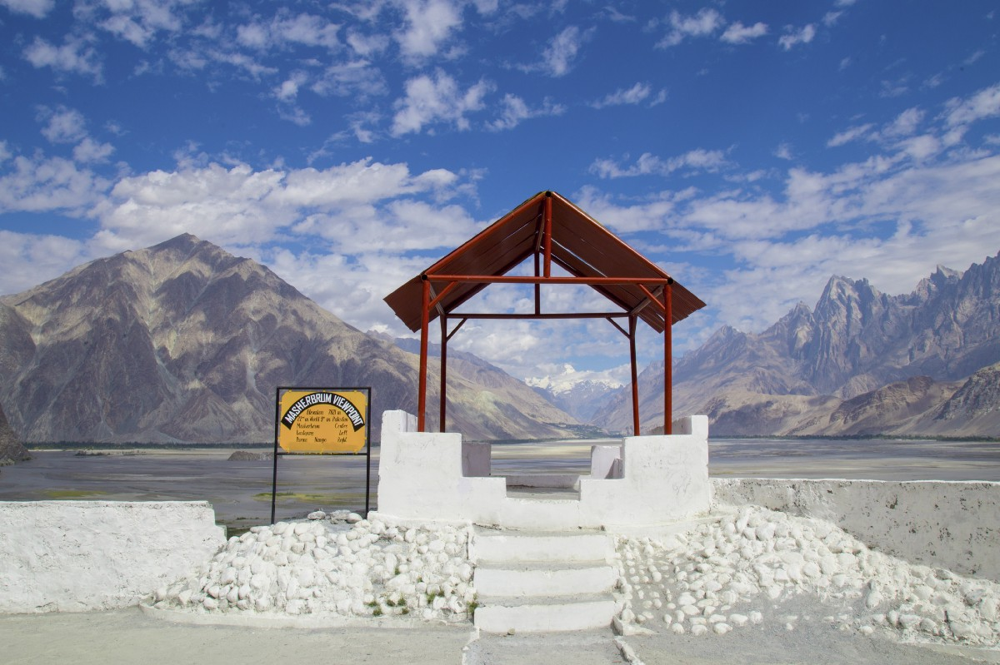
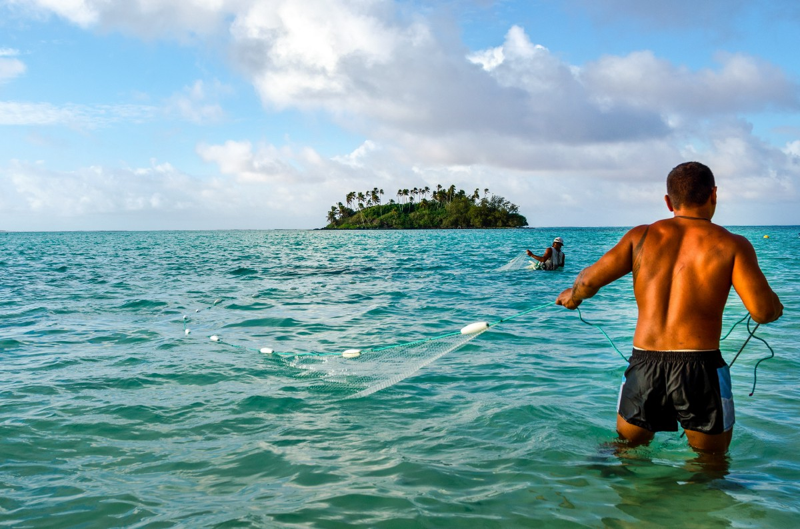
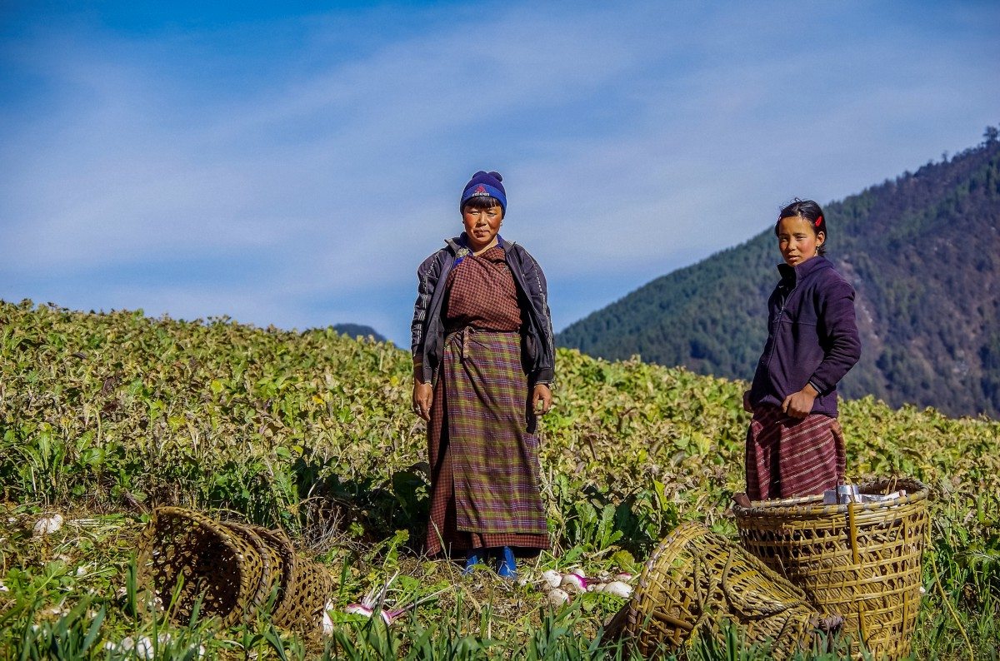

A lack of running water has adversely affected the lives of women and girls in a remote mountain village in Pakistan.

For centuries Cook Islanders have used traditional knowledge to read their environment and provide food for their families. But climate change is effecting them deeply.

For Phub Zem Doya who lives in the remote village of Singye in southwest Bhutan, water is precious, and not to be taken for granted.
Deyanira Mishari has an unusual job for an indigenous Peruvian woman—she’s Head of the San Matias-San Carlos Protection Forest.